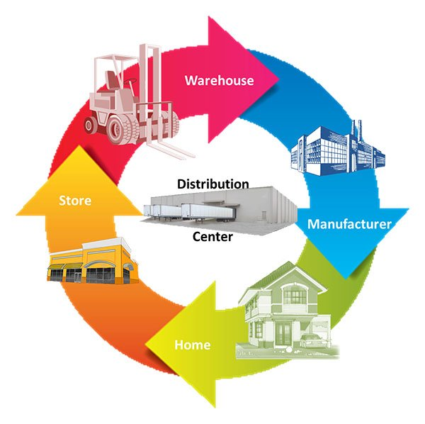

IOT đang cách mạng hóa hoạt động kho và chuỗi cung ứng.

Chuỗi cung ứng đã trở nên thông minh hơn trong vài năm. Cung cấp giải pháp cho các vấn đề như theo dõi hàng hóa trong khi họ đang đi trên đường, khi quá cảnh hoặc giúp nhà cung cấp trao đổi thông tin khoảng không quảng cáo là một số dịch vụ phổ biến.Với một hệ thống được kích hoạt IoT, thiết bị nhà máy có chứa các cảm biến nhúng truyền dữ liệu về các thông số khác nhau như áp suất, nhiệt độ và sử dụng máy. Hệ thống IoT cũng có thể xử lý quy trình làm việc và thay đổi cài đặt thiết bị để tối ưu hóa hiệu suất.
Lợi ích của việc sử dụng IOT
-

- Giảm chi phí.
Lợi ích chính của việc có kho thông minh dựa trên IoT sẽ được giảm chi phí xử lý chung.Tất cả mọi thứ,từ quản lí hàng tồn kho đến bảo trì,sẽ được lên kế hoạch cho hàng loạt - Theo dõi thời gian thực hiện hệ tiếp theo.
Các thiết bị và cảm biến được kết nối có thể giúp theo dõi số lượng và chất lượng hàng hóa từng giây.Khả năng này có thể biến đổi ngành công nghiệp thực phẩm dễ hỏng,chịu tổn thất nặng nề do hư hỏng vì cảm biến có thể giúp theo dõi nhiệt độ cũng như vị trí của hàng hóa. - Quy trình làm việc liền mạch (Seamless Workflow).
Bạn có thể sử dụng robot để lấy các bài viết cụ thể mà không bị trì hoãn. Bạn cũng có thể sử dụng dữ liệu được thu thập bởi các thiết bị IoT để xác định bố cục và cấu hình tốt nhất của kho.Do đó, bạn sẽ có thể duy trì một quy trình làm việc liền mạch với hiệu quả tối đa của nó. - Tăng khả năng mở rộng.
Vì bạn có thể tối ưu hóa từng mét vuông của không gian lưu trữ của mình với IOT, việc mở rộng nó theo cầu của bạn sẽ tương đối dễ dàng.Với sự trợ giúp của dữ liệu trong quá khứ,bạn có thể tính toán thời gian,không gian, cơ sở hạ tầng và đầu tư cần thiết cho việc tăng quy mô. - Cải thiện độ chính xác dự báo.
Kho dựa trên Iot có thể thu thập và xử lí dữ liệu hàng tồn kho để dự báo tiềm năng hoặc giảm khối lượng công việc.Nó có thể gửi thông báo thích hợp cho người quản lý kho, cung cấp cho họ nhiều thời gian để chuẩn bị cho nhu cầu thay đổi.Trong tương lai, kho thông minh sẽ giống như các hệ sinh thái tự duy trì có thể điều chỉnh không gian lưu trữ theo biến động thị trường.